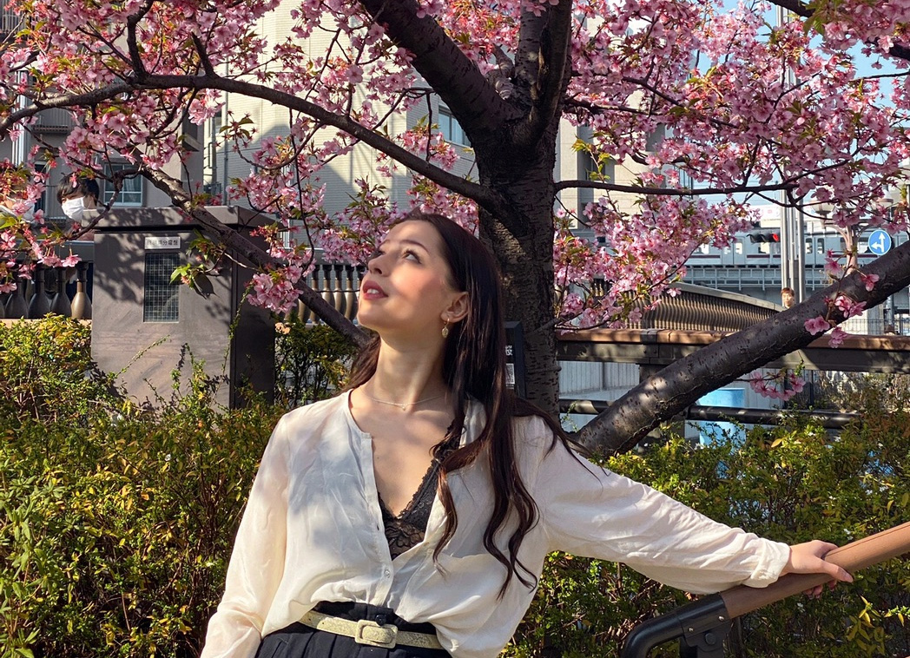
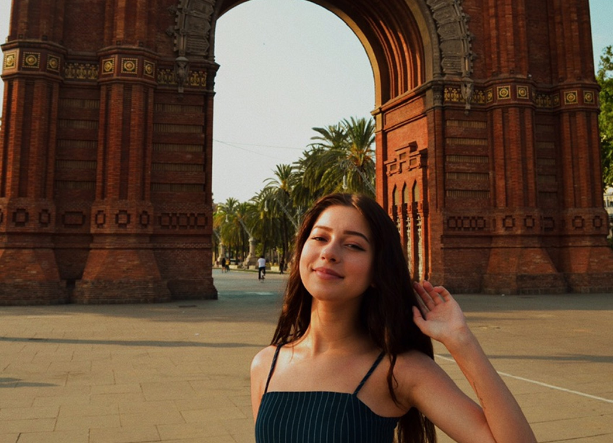

Japan
My trip to Japan was awesome! I visited Tokyo and Kyoto. Everyone was super friendly and it was so easy to get around whether locally or across the country via the Shinkansen's. The food was fantastic, definitely ate at a lot of great places which I'll be reviewing on TA. I was in Japan for 2 weeks, and did cover a lot, though I only felt like I scratched the surface. So definitely will want to be making a returning visit sometime in the near future. Maybe cherry blossom season :)

Greece
I adored Athens and I’ve been talking it up to everyone I’ve spoken to since. This city is magnificent! With great street art, incredible food, colourful neighbourhoods, and so much history, I think it’s the perfect destination for a European city break.I spent three days wandering the streets of Athens and came away thinking it’s a great length of time to spend there. Something about Greece is so healing for me. It calms my overactive mind, soothes my worries, and leaves me feeling healthier and stronger than ever. Greek food is one of my favourite cuisines in the world.
Spain
I had lots of fun on my trip to Spain. I was amazed by it's beauty. Well, what can I say but...I fell in love with Barcelona! Wonderful city, full of beautiful architecture, scenery, beaches and food. I stayed in Barca most the time, but I also went to Tossa de Mar. I really enjoyed the different way of life. If there's one thing Spain is famous for, it's for the lively atmosphere to be found in its streets at any time of the day or night. The food was also great. I loved almost everything. The paellas are as good as they sound. :)
